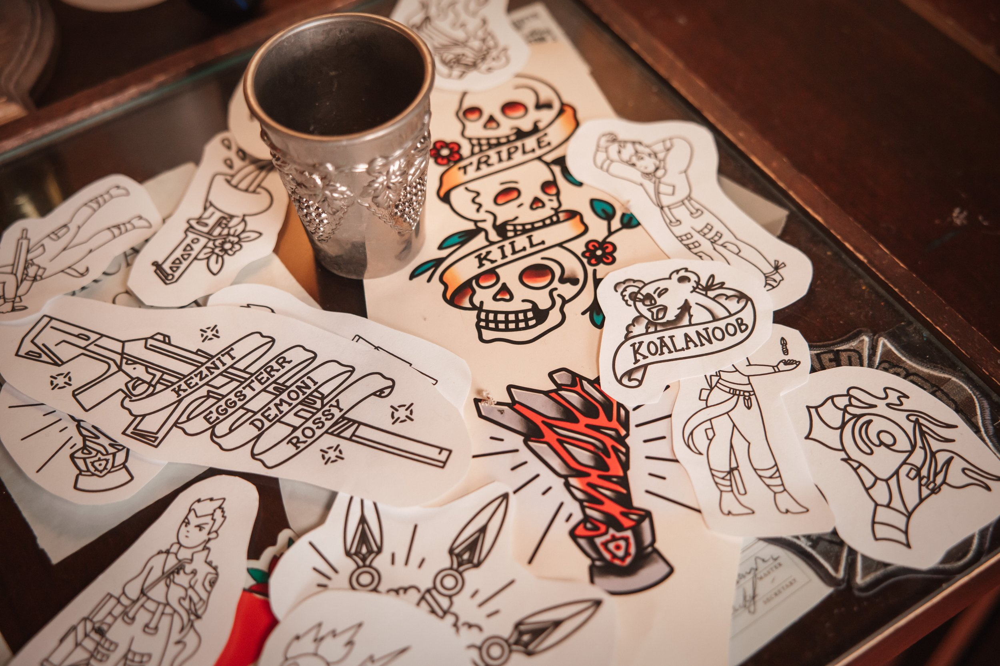
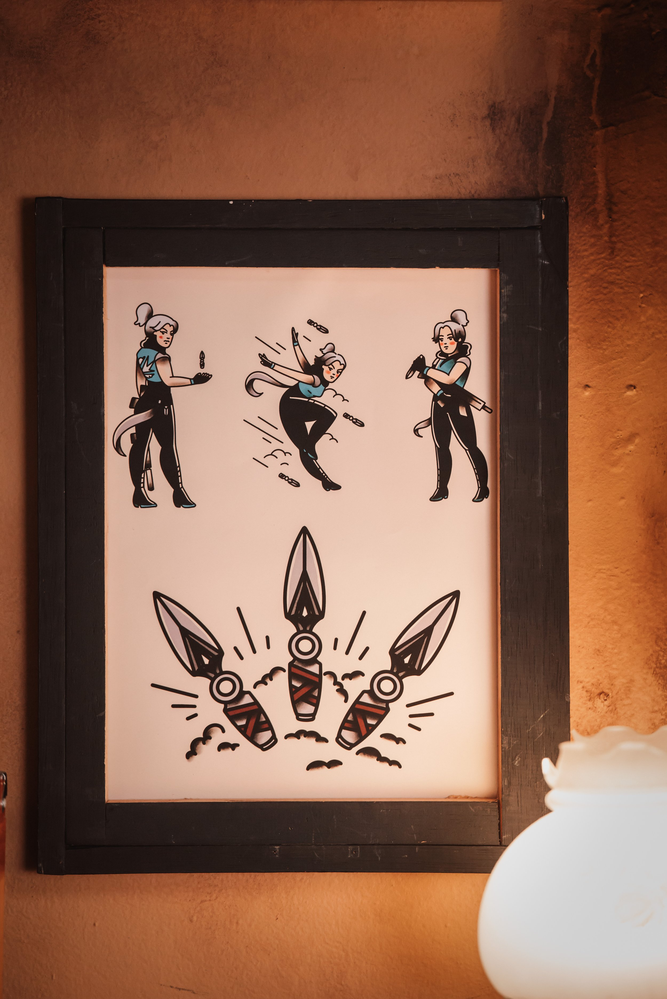
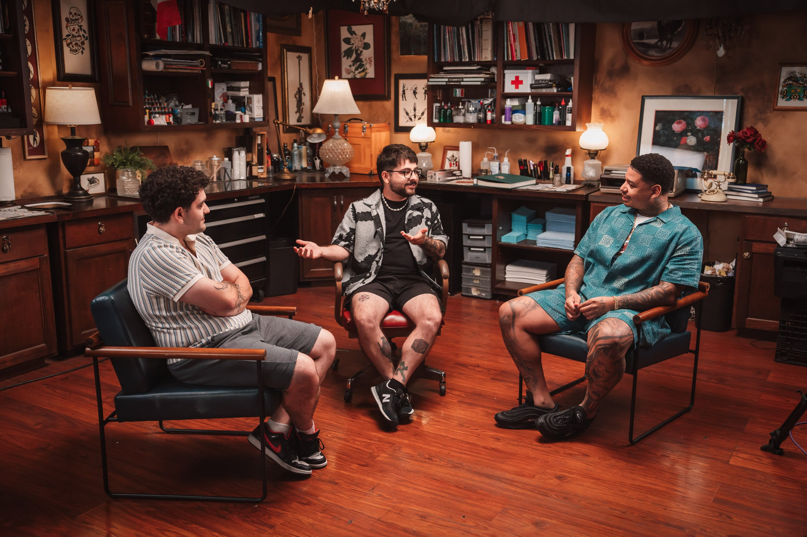
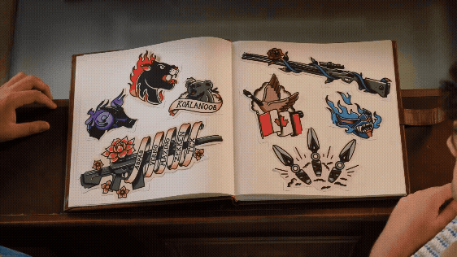
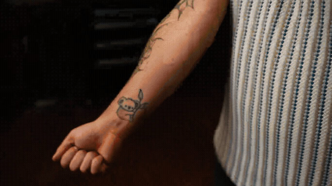
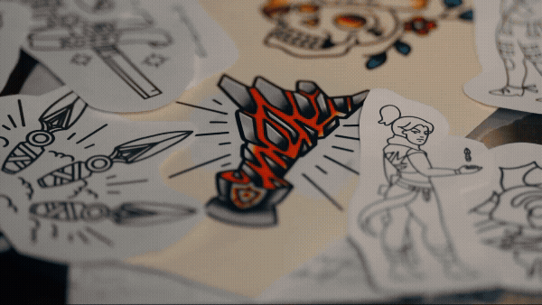
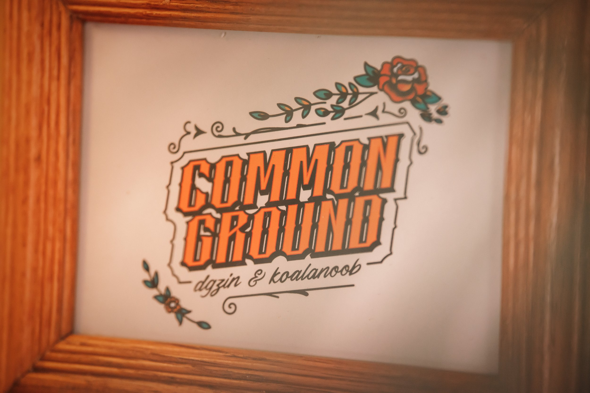
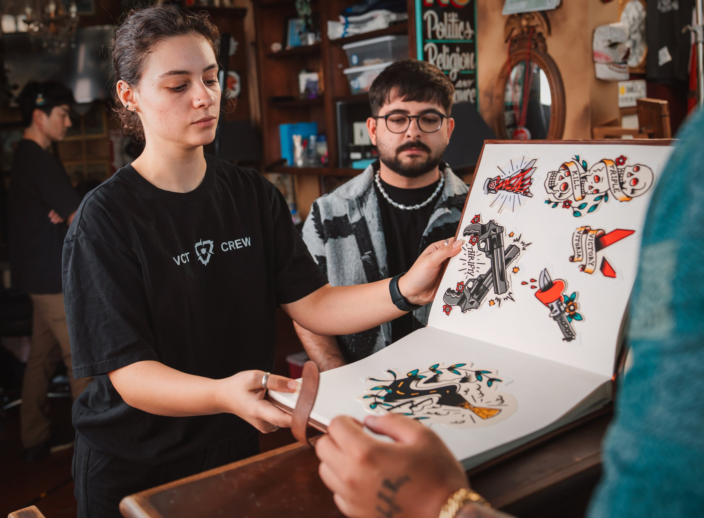
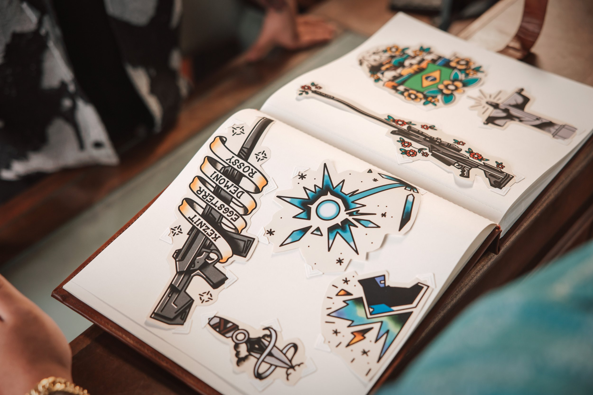
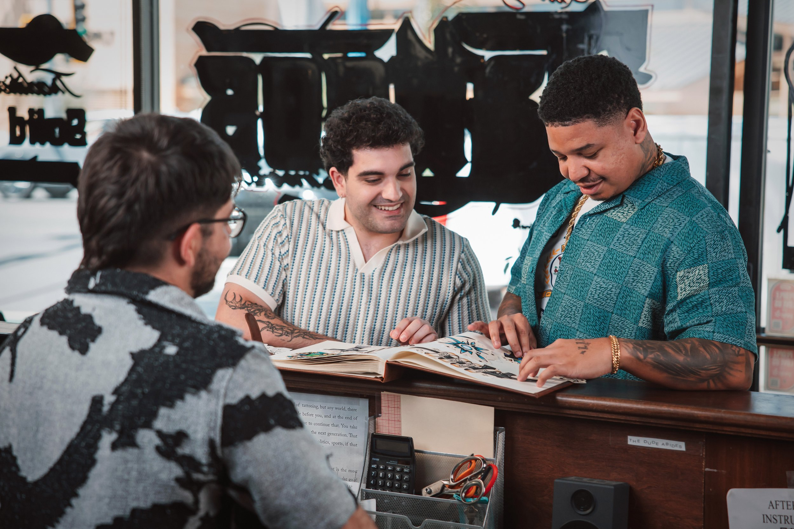

Riot games valorant interview set
Client: Riot Games
Year: 2026
Role: Set Fabrication | Set Design | Art Direction
We collaborated with Riot Games to transform a traditional tattoo shop (The Honorable Society) into a production set reimagined through the lens of VALORANT. The focus was on replacing the existing shop artwork with fully custom pieces designed specifically for the talent, Koalanoob and DGZIN, with host Melão.
We developed a full suite of tattoo designs into a worn, leather flash book. These pieces became the visual backbone of the set, turning the shop into a narrative space rather than a neutral backdrop. Tattoos served as the connective thread, grounding the conversation in permanence, landmark moments, and identity.
Valorant inked into identity.
Custom Propwork - Flash Tattoos
We designed a custom tattoo set, complete with original flash sheets that fused VALORANT IP with key moments from each player’s personal journey. The concept reimagined each story as permanent ink, translating defining in-game memories and milestones into traditional American tattoo flash.
For example, a favela paired with the Brazilian flag to represent DGZ, a rose vine wrapping around an Outlaw to reflect KOALANOOB’s family and gameplay, and a trophy awaiting them at the end of a long road.
Custom Propwork - Agent Pin-Ups
We illustrated pin-up style interpretations of each player’s main agents in VALORANT, reimagining them through a bold, tattoo-inspired lens. Drawing from classic pin-up composition and attitude, the designs translated agents like Neon, Jett, and Yoru into expressive, stylized artwork.











Produced by Riot Games In House Team